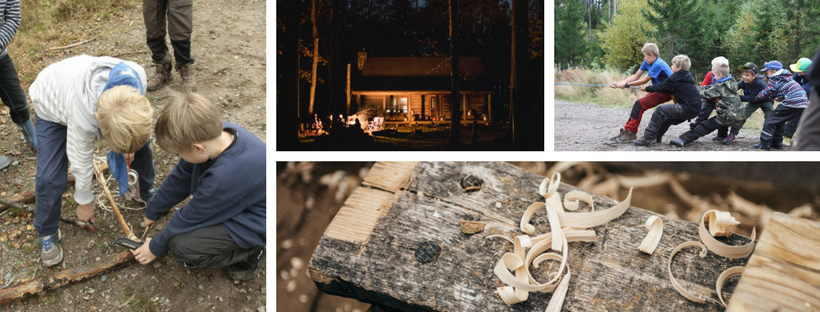
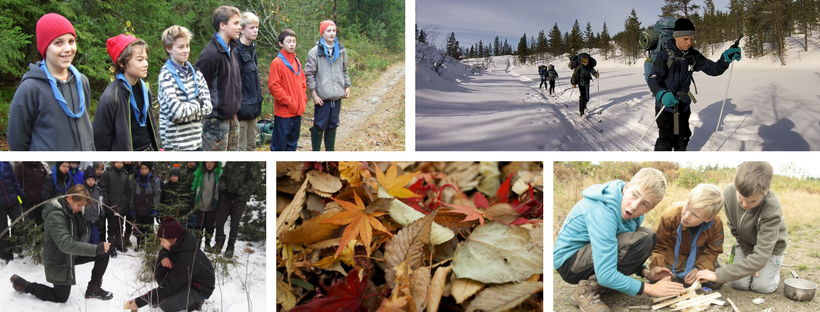
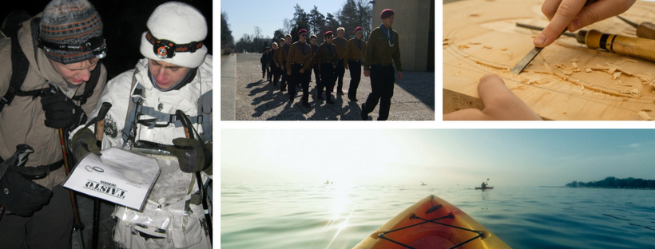

Ryhmien toiminta ikäkausittain
Partiossa ryhmät on jaettu viiteen eri ikäkauteen. 15-vuotiaina Samoajina lauttapartiolaiset pääsevät mukaan laadukkaaseen johtajakoulutusohjelmaan, jonka aikana heistä kasvaa nuorempien ryhmien vetäjiä.
Kolkkapojat 7-9 v.
Kolkkien ryhmää kutsutaan laumaksi. Laumaa johtaa vähintään yksi täysi-ikäinen laumanjohtaja ja yksi apujohtaja. Leikit, seikkailut ja tarinat ovat kolkkatoiminnassa tärkeitä. Viikoittaisissa partiokokouksissa kolkkapojat pääsevät ottamaan tuntumaa monenlaiseen partioon kuuluvaan tekemiseen. Ensimmäiset kokemukset retkeilystä ja leirielämästä myös yleensä saadaan kolkkavuosina.
Seikkailijat 10-12 v.
Seikkailijoiden ryhmää kutsutaan joukkueeksi. Viikoittaisissa partiokokouksissa seikkailijat opettelevat partion perustaitoja ja retkeilevät paljon. Seikkailijoilla on mahdollisuus osallistua viikonloppuretkille, talviretkille, partiotaitokilpailuihin ja kesäleirille
Tarpojat 12-15 v.
Tarpojien ryhmää kutsutaan vartioksi ja se kokoontuu viikoittain. Tarpojien partiokokouksissa teemoina ovat luovuus, selviytyminen, leiri ja yhteiskunta. Tarpojilla on mahdollisuus osallistua viikonloppuretkille, talvileirille, partiotaitokilpailuihin ja kesäleirille.
Samoajat 15-17 v.
Samoajien ohjelmaan kuuluu olennaisena osana ryhmänohjaajakoulutus ja johtamisharjoittelu. Samoajat toimivat tarpojien tai seikkailijoiden vartionjohtajina tai apujohtajina.
Vartionjohtajakoulutuksen suorittaneilla Samoajilla on mahdollisuus osallistua kaikille lippukunnan retkille ja leireille johtajina. Lisäksi samoajat voivat veloituksetta osallistua piirin koulutuksiin, esim. erätaito-, leikki- ja ensiapukursseille.
Vaeltajat 18+ v.
Vaeltajat toimivat kaikkien ryhmien johtajina, lippukunnan leirien ja retkien johtajina ja ottavat vastuutehtäviä, aina lippukunnanjohtajuutta myöten.
Vaeltajat voivat suorittaa Partiojohtajan Peruskurssin ja osallistua piirin tai kattojärjestön koulutuksiin ja esim. ulkomaanmatkoille. Partiokurssit ovat vaeltajille ilmaisia.
Mitä muuta partiossa tehdään? Lue lisää ikäkausien toiminnasta osoitteessa partio.fi/ikakaudet!